AI Academy · Level 4 · Grade 9 · Week 8 · Student lesson
Leakage
Learn to understand, design, build, test and explain AI systems responsibly.
Project: Responsible Plant Classifier
Before you start
Week 2: exclude information unavailable in the intended prediction setting.
Plan time to read, investigate and explain. Keep predictions separate from observations.
Student lesson · 1 of 18
Your mission
Start with the target: Choose a split unit that matches the intended prediction claim. Try the recall before opening notes.
Your learning target
I can choose a split unit that matches the intended prediction claim.
I can keep related examples together and audit group overlap.
I can record split roles counts and limits before model evaluation.
Remember before reading
Close your notes first. A rough first answer helps us choose the right starting point; it is not a score for your ability.
Without opening the old lesson, explain one key idea from Sampling and Intended Use. Give an example and a mistake that the idea helps you avoid.
Without opening the old lesson, explain one key idea from Inspect Before Modeling. Give an example and a mistake that the idea helps you avoid.
Without opening the old lesson, explain one key idea from Features, Labels, Targets. Give an example and a mistake that the idea helps you avoid.
After trying, check the relevant lesson or ask your teacher. Change the part of your explanation that the evidence shows was wrong.
Leakage occurs when a feature exposes the target through information that would be unavailable, created later, or derived from the answer at real prediction time.
Your target
LEARNING TARGET Five photos of each leaf are randomly split by file into train and test. Why can accuracy be optimistic? Give a corrected grouping rule.
Builder name and experiment date:
Readiness for the connected explanation
Why does agreement between two annotators not prove their labels are correct?
Readiness for Scaling without leakage
What determines the nearest training neighbour, and which examples belong in the stored neighbour pool?
This week’s end goal
By the end, I can explain leakage using a traced example and a stated limitation.
Student lesson · 2 of 18
Notice the evidence
Investigate the supplied Leakage case. Separate observations, given facts and assumptions before choosing an explanation.
PICTURE ENTRY
Notice → Predict → Explain
Begin with visible evidence; do not explain more than the picture and information support.
Start with this puzzle
MYSTERY The team must use leakage to solve a model-building problem. What information do they have? What important evidence is still missing?
Name three visible details without interpreting them.
Predict the data, model, or evaluation decision being made.
Identify one hidden assumption that could change the result.
State what evidence would confirm or reject your prediction.
My prediction and supporting evidence:
A closer explanation
A model may seem successful when its test examples closely resemble examples it already learned from. Imagine several pictures taken seconds apart during one robot trip.
They have different picture IDs but share a route, lighting and objects. This week you will assign entire trips to separate sets and explain what the resulting evaluation could measure. No model is fitted in this lesson.
Our invented twelve-row dataset contains frame descriptions from six trips. Each row is one frame; the group is its trip ID. The proposed claim concerns new trips on the same practice route under similar conditions.
We therefore keep all frames from a trip in one set. To claim success on new routes, grouping only by trip would not be enough.
| Trip group | Frame IDs | Assigned role |
|---|---|---|
| A | A1 A2 A3 | Training |
| B | B1 B2 | Training |
| C | C1 | Training |
| D | D1 D2 | Validation |
| E | E1 E2 | Test |
| F | F1 F2 | Test |
This small fictional assignment is for learning split design, not evidence of real performance. Each frame belongs to one group and one set.
Store frame and trip IDs as metadata for auditing; do not assume an ID is an appropriate prediction input.
Apply the connected idea: Scaling without leakage
Last week we compared one numeric feature. With two features, their numerical ranges can give one feature much more influence. Scaling changes those contributions.
We will learn a minimum and range for each feature from training only, then reuse them for every example.
These fictional trips have a distance reading in cm, a brightness reading in sensor units and a reviewed lane label. Features are available before prediction; labels are separate evidence.
Related trips have already been grouped before splitting. For this exercise use k=1, add absolute differences across the two features, and break equal distances by alphabetical ID.
| ID and label | Distance cm | Brightness units |
|---|---|---|
| A clear | 10 | 200 |
| B blocked | 20 | 100 |
| C blocked | 20 | 200 |
For query (11,120), raw distances to A,B,C are 1+80=81, 9+20=29 and 9+80=89. B wins and predicts blocked. Adding these different units is an unscaled numerical choice; the large brightness range strongly affects it.
Scaling offers another explicit distance choice, not proof of which features matter.
Student lesson · 3 of 18
See how it works
Follow the mechanism for Leakage. Connect each labelled input, deciding step and result.
ML MECHANISM
Input → Model → Evidence
Trace the information, fitted behavior, and evaluation proof separately.
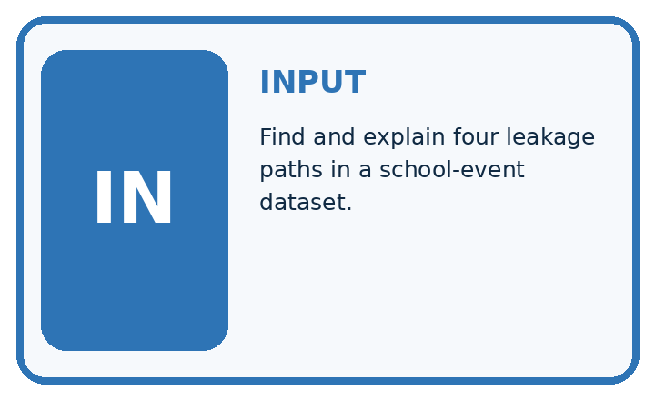
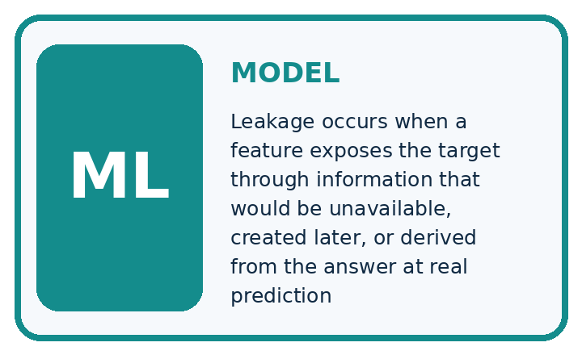
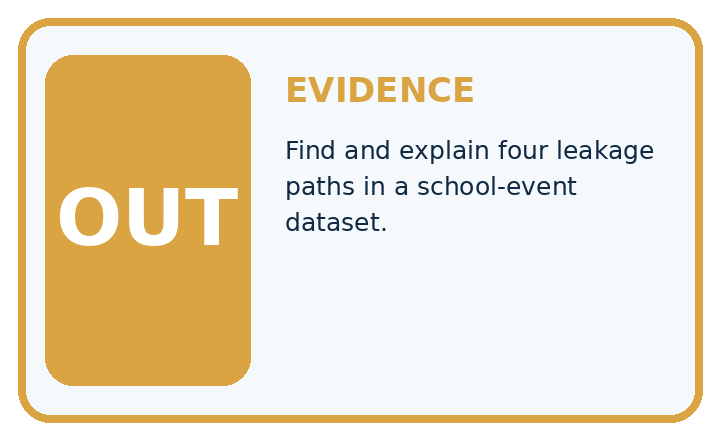
Question to explain
QUESTION Find and explain four leakage paths in a school-event dataset.
MODEL IDEA Leakage occurs when a feature exposes the target through information that would be unavailable, created later, or derived from the answer at real prediction time.
PROOF NEEDED Use an unseen case, visible calculation, error analysis, and a stated limitation.
How the mechanism works
UNDER THE HOOD A leaf file name contains 'diseased'—the answer is hidden in the input. Treatment outcome was recorded after diagnosis, so it is unavailable at prediction time.
Draw a fresh data → model → prediction → evaluation trace:
A closer explanation
Training data fits the model. Validation data helps compare choices such as candidate rules. Keep the test set for a final check after those choices are fixed.
A learner who repeatedly changes the model after seeing test results has used that set for development; its score is no longer an untouched final check.
train_groups = {"A", "B", "C"}
valid_groups = {"D"}
test_groups = {"E", "F"}
shared = ((train_groups & valid_groups)
| (train_groups & test_groups)
| (valid_groups & test_groups))
print(sorted(shared))
print(len(train_groups), len(valid_groups),
len(test_groups))The first line of output is []: no trip ID is shared between any pair of sets. The second is 3 1 2: training, validation and test contain three, one and two trip groups. The symbol & finds shared values and | combines sets.
These are group counts, not frame counts.
Keep each trip in one role
This audit assumes the lists correctly describe every frame assignment. It cannot find an omitted frame, a wrong trip ID, a copied image with a different ID or a feature containing the answer.
Check the assignment table and source records too.
Apply the connected idea: Scaling without leakage
train = [(10, 200), (20, 100), (20, 200)]
low = [min(row[j] for row in train) for j in range(2)]
span = [max(row[j] for row in train) - low[j]
for j in range(2)]
if 0 in span:
raise ValueError("Review a constant training feature")
def transform(row):
return tuple((row[j] - low[j]) / span[j]
for j in range(2))
scaled_train = [transform(row) for row in train]
query = (11, 120)
print(low, span)
print(scaled_train)
print(transform(query))For each feature use scaled value = (value minus training minimum) divided by training range. range(2) visits feature positions 0 and 1.
The code prints [10, 100] [10, 100], then [(0.0, 1.0), (1.0, 0.0), (1.0, 1.0)], then (0.1, 0.2). Each minimum becomes 0 and each maximum becomes 1.
The first calculations fit low and span from train. transform uses those stored values without learning new ones. The code assumes nonempty training rows with exactly two finite numeric features; it does not check all inputs.
Its explicit zero-range guard stops division by zero so a constant feature can be reviewed. This is a classroom policy, not a claim that every library stops this way.
Connect the picture and the explanation
Point to the input, the deciding step and the result in this week’s visual. Explain the same step in ordinary words. A picture helps when you can say what each part represents.
Student lesson · 4 of 18
Compare the cases
Compare the supplied cases for Leakage. Identify the detail that changes the conclusion.
EVALUATION DESIGN
Four Tests, Four Kinds of Evidence
A system is not understood until it survives more than one comfortable example.


NORMAL Expected data and expected behavior.
Keep this boundary clear
BOUNDARY Value close to a threshold, ambiguous label, or uncertain prediction.
MISSING Necessary field, label, source, or measurement is unavailable.
SHIFTED New lighting, species, device, subgroup, or time condition.
RELEASE RULE Passing one case never proves generalization. Predefine expected behavior for all four categories.
Which case most threatens today's claim, and why?
Change one thing in the pictured case
Change one thing
Change: Move Fir’s first view into training while retaining its other two in test.
Predicted result
Prediction: The unseen-plant evaluation is compromised.
Why the result follows
Reason: Fir’s identity now appears in training; different view IDs do not remove the shared plant relationship.
Student lesson · 5 of 18
Words that unlock the idea
Use the vocabulary of Leakage to explain a concrete decision, rather than only memorising definitions.
VOCABULARY
Words You Can Calculate and Defend
A definition matters when it lets you interpret a new dataset, model, or result.
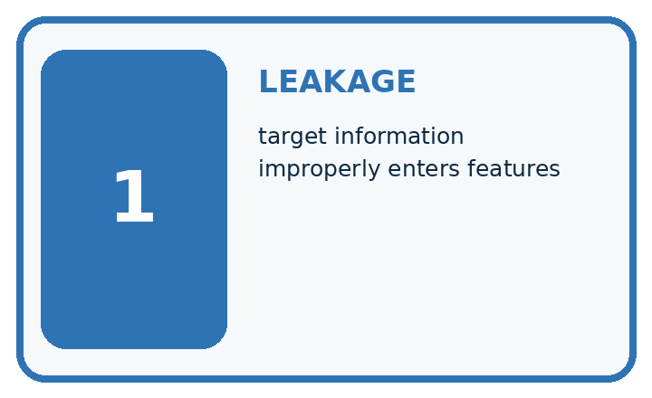
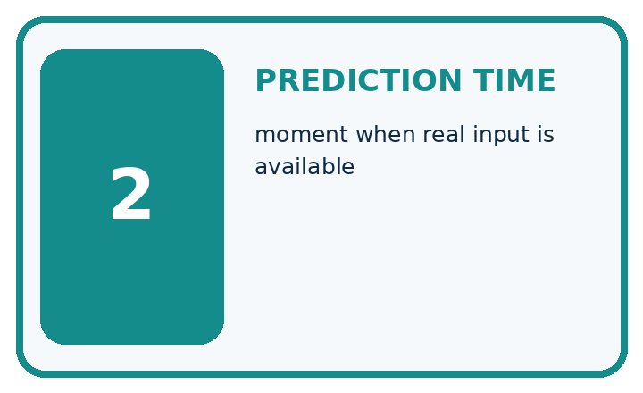
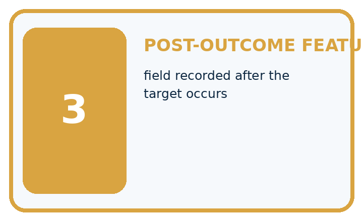
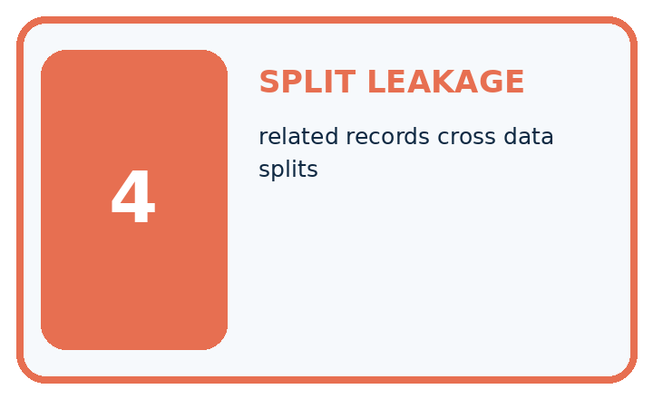
| Term | Precise meaning | My ML example |
|---|---|---|
| leakage | target information improperly enters features | |
| prediction time | moment when real input is available | |
| post-outcome feature | field recorded after the target occurs | |
| split leakage | related records cross data splits |
MISCONCEPTION TO REPAIR A highly accurate feature should be kept even when it would not exist during real use.
Repair the claim using a definition, calculation, or test record:
Words used in the closer explanation
| Word | Meaning |
|---|---|
| Training set | Examples used to fit a model |
| Validation set | Separate examples used to compare choices during development |
| Test set | Held out examples used for final evaluation after choices are fixed |
| Group | Related examples that must stay together for a stated evaluation goal |
Terms for Scaling without leakage
| Term | Meaning |
|---|---|
| Range | The largest training value minus the smallest for one feature |
| Fit | Learn and store values from training data |
| Transform | Apply a stored calculation to feature values |
| Leakage | Use information that should be unavailable while developing or evaluating a prediction method |
Student lesson · 6 of 18
Follow a worked example
Follow the worked trace for Leakage, predict a step, then compare with its explanation.
WORKED EVIDENCE
Reason Step by Step
Predict first. Then check each step. A correct answer without visible evidence cannot be audited.
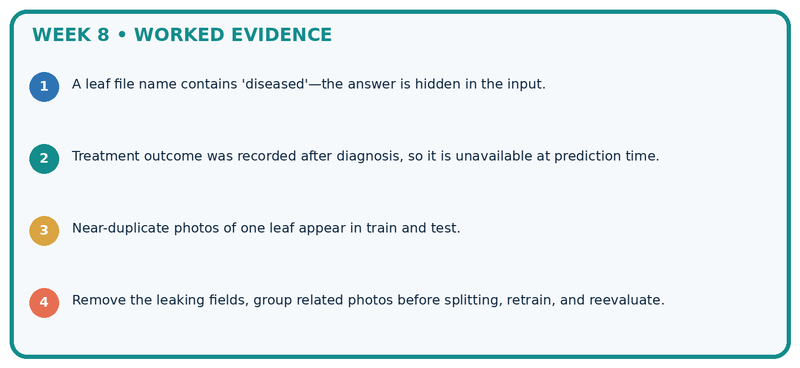
Step 1
STEP 1 A leaf file name contains 'diseased'—the answer is hidden in the input.
Step 2
STEP 2 Treatment outcome was recorded after diagnosis, so it is unavailable at prediction time.
Step 3
STEP 3 Near-duplicate photos of one leaf appear in train and test.
Step 4
STEP 4 Remove the leaking fields, group related photos before splitting, retrain, and reevaluate.
CHECK Verify the denominator, unit, split, class definition, and data version before interpreting a score.
Recalculate, retrace, or restate the evidence independently:
A closer explanation
Worked explanation · Leakage
Suppose A1 and A2 are in training while A3 is in test. The frame IDs differ, but A appears in both sets. Shuffling the rows does not remove this relationship.
For our new-trip claim, move all A frames to one chosen role and record the revised assignment before evaluating a model. Do not copy A3 into both roles.
Worked explanation · Leakage
Audit that every source frame occurs exactly once, no group crosses roles and the assigned counts sum to the source count. In our worked plan the row counts are six training, two validation and four test: twelve total.
A fixed random seed can reproduce a random split, but it cannot make a flawed grouping choice fair.
Worked explanation · Leakage
A split record names the prediction goal, source version, group definition, exact assignments, row and group counts, date and any random method or seed used.
For this hand-assigned example, record that there was no random sampling. Keep label-rule versions and unresolved review statuses traceable as in Week 5.
Apply the connected idea: Scaling without leakage
One stored scale for every split
Worked explanation · Leakage
The scaled query is (0.1,0.2). Distances to scaled A,B,C are 0.1+0.8=0.9, 0.9+0.2=1.1 and 0.9+0.8=1.7. A now wins and predicts clear. We changed feature contributions; we did not change any reference label.
Compare scaled queries with scaled training rows, never with raw training rows.
Equal training ranges after scaling do not establish equal real-world importance. Outliers affect minima and ranges. Scaling does not repair wrong labels, missing information or an unsuitable distance measure.
Learn from the worked case
Cover the result before checking it. Say what is given, choose the procedure, and follow one step at a time. Then uncover the result and explain your first mismatch. Ask why a step is allowed, not only what number it produces.
A pictorial worked case: Leakage
Split by plant identity when testing generalisation to new plants.
The facts we will use
Supplied facts
Plants Cedar, Elm and Fir each have three views. Aim: recognise previously unseen plants. Plan: Cedar and Elm train; Fir final test.
Supplied facts
All inputs and outcomes in this worked example are invented classroom data; no real model run is claimed.


Read the picture one step at a time
Why this result follows
Why the result follows
Read the picture in order. The final test probes one unseen plant, not three independent plants. The arrows show which recorded input or intermediate result each decision uses.
Explain the deciding step aloud before checking the changed case; pointing to the final answer alone does not show how it follows.
What this example does not establish
Keep the stated limit
A correct group split still needs enough representative plants; this tiny exercise is not a reliable population estimate.
Keep the stated limit
Read the labelled picture: How many independently new plant identities are in the original test? Point to the relevant step in the picture, then write the changed result and the rule or evidence that supports it.
Keep the stated limit
Change one thing: Move Fir’s first view into training while retaining its other two in test. Predict the result before checking the explanation. What remains the same?
Student lesson · 7 of 18
Find and repair a mistake
Find the unsupported step in the Leakage claim and explain a repair using the supplied evidence.
Find the first error
ERROR DETECTIVE
Compare → Diagnose → Repair
Do not patch the answer. Find the earliest unsupported assumption, data problem, or experiment error.
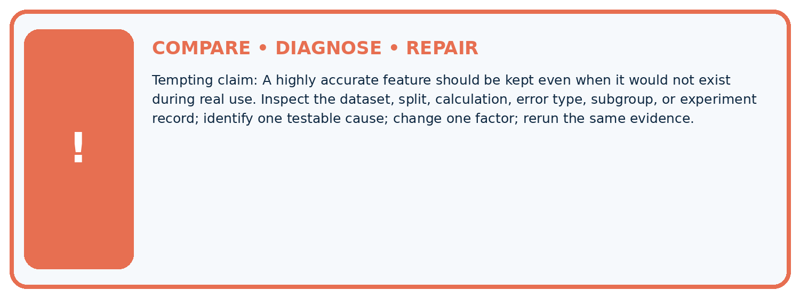
| Evidence record | Expected | Actual | Likely cause / next test |
|---|---|---|---|
| normal case | passes | ||
| boundary case | defined behavior | ||
| missing case | safe fallback | ||
| shifted case | measured limit |
CLAIM TO CHALLENGE A highly accurate feature should be kept even when it would not exist during real use.
Diagnose one cause and name the cleanest next experiment:
A closer explanation
Check the claim against the facts
Fit learned preprocessing, such as scaling values using an average, on training data and apply the stored transformation to the other sets.
Using the full dataset to learn such values would let held out information influence development. We will implement preprocessing later; group separation alone does not solve that issue.
Check the claim against the facts
Record exclusions and label-review policies before scoring. Do not remove difficult test cases because they reduce the score.
If a genuine data error requires repair, document it and its effect on the evaluation rather than claiming the old test stayed untouched. Next week you will build a simple baseline using these split roles.
Apply the connected idea: Scaling without leakage
Check the claim against the facts
Record the split, feature names and units, feature order, minima, ranges, constant-feature policy, distance, k and tie rule. Keep the scale with the stored training examples. New data uses the same calculation.
If development choices change, document them and reserve a separate final test. Next week combines these steps into one reproducible classifier pipeline.
Check the claim against the facts
If a feature is constant in training, its range is zero. This example stops for review.
One documented option is to omit that feature everywhere and update the recorded feature list; do not divide by zero or invent a scale using validation values.
Library policies differ, so inspect and record the one actually used.
Student lesson · 8 of 18
Practise together
Practise Leakage with support, then explain the deciding step in your own words.
ML STUDIO
Specify Before You Run
A trustworthy result can be reproduced from the recorded data, code, settings, and evaluation rule.

Experiment record
Question to explain
QUESTION + intended use + success threshold
DATA version + grouped split + leakage check
CODE/preprocessing + features + model + settings + seed
METRICS + positive class + units + denominators
PREDICTIONS + errors + subgroup slices + limitations
HUMAN reviewer + release, revise, limit, or stop decision
Write the minimum record needed to reproduce today's result:
A closer explanation
For new trips on a familiar route, holding out whole trips addresses within-trip similarity. For new routes, hold out entire routes so all their trips stay together.
For forecasting future events, a time-respecting split may be needed: training on later events to predict earlier ones would not represent that intended use. The evaluation question determines the separation.
There is no universal percentage that makes a split valid. Large groups can make row counts unequal.
Check that the sets can support the intended comparison, including enough relevant cases and labels, without moving individual related frames just to hit a percentage.
This twelve-row example is too small to justify a reliable performance claim.
Apply the connected idea: Scaling without leakage
Keep the training scale and k=1 fixed. Validation rows are (11,120,clear), (19,190,blocked), (12,80,clear). Their scaled feature pairs are (0.1,0.2), (0.9,0.9), (0.2,-0.2).
Nearest IDs are A,C,B, so predictions clear,blocked,blocked score 2/3. The training-majority blocked baseline gets 1/3. These three examples do not establish general superiority.
The last brightness value scales to -0.2 because 80 is below the training minimum 100. New values can fall outside 0 to 1; do not refit or silently clip them.
Including validation features in minima or ranges leaks evaluation information even without labels. Fitting a separate scale on validation also changes coordinates and breaks the intended comparison.
Practise with less help: Distinguish frames from groups
Use workbook W2 for the connected example “Splits and related examples”. First fill the input and rule boxes. Try the middle steps before asking for a hint. After a hint, try the next step yourself.
| Plan | Do | Check |
|---|---|---|
| What is given? Which rule or procedure applies? | Record each intermediate step. | Does the result follow? What remains unknown? |
Explain your trace to a partner. Your partner points to one step to check. Swap roles on the next case. Each person writes their own explanation.
Check your reasoning
Use the worked case for Splits and related examples. Proposed explanation: “Different row IDs mean independent examples”. Decide whether this explanation is supported.
Point to the step or supplied fact that decides; explain your repair if needed.
Answer on your own before discussion. If you are unsure, say which step you need help with.
Practise the connected topic: Scaling without leakage
Use its named workbook W2. Identify the given inputs, try the middle steps with less help, then explain your trace. Check this claim before group discussion: Every transformed value must lie between 0 and 1
Explain the picture
How many independently new plant identities are in the original test? Point to the relevant step in the picture, then write the changed result and the rule or evidence that supports it.
This is supported practice. Keep the separately named independent case for an attempt before feedback.
Student lesson · 9 of 18
Run the investigation
Investigate Leakage. Record the prediction, actual observation or labelled paper trace, explanation and next test separately.
EVIDENCE LAB
Predict → Run → Calculate → Interpret
Keep the test conditions fixed, record every result, and change only one planned factor.
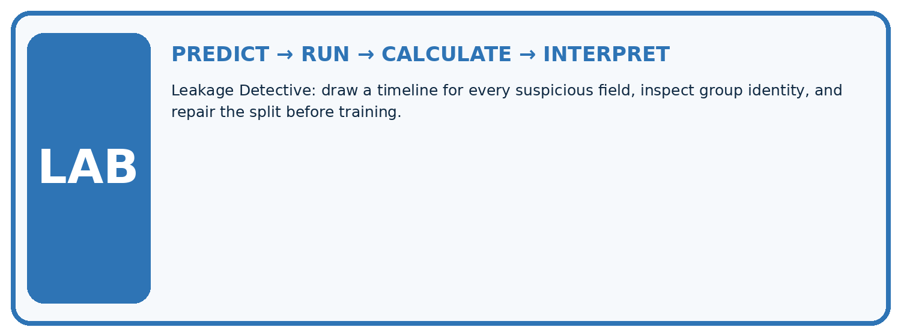
1. Write the hypothesis and expected evidence before running.
2. Leakage Detective: draw a timeline for every suspicious field, inspect group identity, and repair the split before training.
3. Run one normal, one boundary, one missing, and one shifted case.
4. Calculate the metric from raw counts or row-level errors.
5. Interpret what changed, what did not, and what remains unsafe or unknown.
| Case | Prediction | Actual | Calculation / evidence | Meaning / next test |
|---|---|---|---|---|
| Normal | ||||
| Boundary | ||||
| Missing | ||||
| Shifted |
Plan → try → check
Before trying: what do I expect, and why? While trying: which step could first go wrong? Afterwards: what did I actually observe, and what should change? Keep “not run” if you only traced the procedure.
Student lesson · 10 of 18
Build your understanding
Move from recall to tracing, diagnosis and transfer in Leakage. Explain why each step is justified.
MASTERY
From Knowing the Word to Owning the Idea
Move upward only when you can produce evidence without copying the example.

DEFINE Use all four terms precisely: leakage, prediction time, post-outcome feature, split leakage.
CALCULATE Reproduce the worked evidence with units and denominator.
TRACE Explain the data, code or decision path.
DIAGNOSE A highly accurate feature should be kept even when it would not exist during real use.
TRANSFER Solve a fresh dataset or model case.
IMPROVE Change one cause and rerun fixed evidence.
DEFEND State intended use, metric, limitation, and human responsibility.
MASTERY RULE A coached calculation becomes mastery only after a different case is completed independently.
Student lesson · 11 of 18
Connect your project
Apply this week’s idea to Responsible Plant Classifier. Keep an annotated decision and the evidence supporting it.
CUMULATIVE PROJECT
Responsible Plant Classifier
Every week adds one reviewable artifact to the same evidence-based capstone.
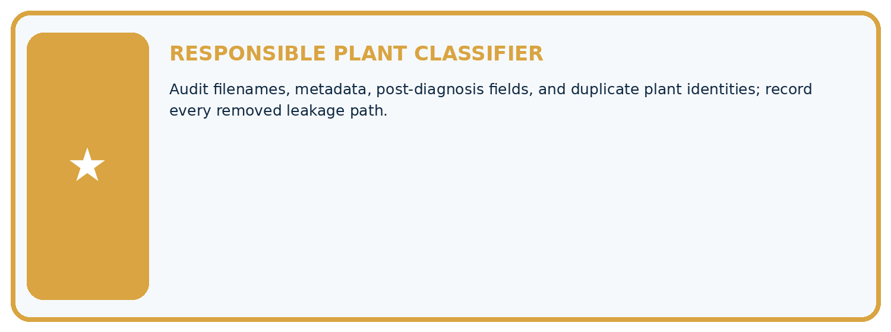
THIS WEEK'S CHECKPOINT Audit filenames, metadata, post-diagnosis fields, and duplicate plant identities; record every removed leakage path.
Which requirement or risk does this artifact address?
Which dataset, split, code, and metric version does it use?
What normal and shifted cases were tested?
What remains uncertain or weak?
What decision still belongs to a teacher or qualified human?
RESPONSIBLE RELEASE Never use this classroom prototype for medical, pesticide, agricultural, or other consequential decisions.
My evidence-linked project decision:
Evidence for your project
For your Responsible Plant Classifier, save the input, procedure, observed result and limitation of this check.
Label this worked example as practice; use a different, previously unreviewed case when checking independent understanding.
Student lesson · 12 of 18
Show what you know
Use a genuinely new case for independent evidence. Previously discussed examples remain practice; use the separately named independent case before feedback.
INDEPENDENT PROOF
Explain • Calculate • Transfer • Defend
Complete this with a fresh case after guided practice and compare it with the mastery criteria.
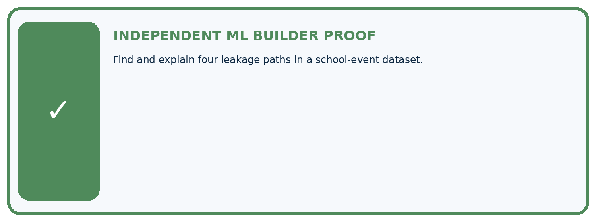
What success looks like
REQUIRED PROOF Find and explain four leakage paths in a school-event dataset.
□ Define the task, feature/target roles, and intended-use boundary.
□ Show the calculation, code trace, or experiment record.
□ Test a normal case and one revealing boundary, missing, or shifted case.
□ Diagnose one failure without changing several factors at once.
□ Name a limitation, fairness concern, and the human-review action.
Independent evidence and defense:
My level: □ Not yet □ With one hint □ Independently □ I can teach and defend it
Connect to the next lesson
NEXT BRIDGE Carry the experiment evidence into: Dataset Cards.
Student lesson · 13 of 18
Study a complete case
Revisit the complete Leakage case for supported practice. Repeated examples do not become fresh assessments.
Week 8 Worked case
Use the supplied details to practise the weekly concept before attempting the independent question. This case extends the illustrated lesson.
The situation
Ten photos per leaf are randomly split so one leaf appears in train and test.
The question
Explain and repair leakage.
Worked explanation
Related views make evaluation familiar. Split by leaf identity before fitting or learned preprocessing; keep all views together.
Explain it in your own words
Which detail supports the answer, and why does it matter?
Trace the supplied case visually
Keep related views in the same partition
| Evidence or stage | Value or result |
|---|---|
| Leaf A, all views | 10 |
| Leaf B, all views | 10 |
| Leaf C, all views | 10 |
Ten photos per leaf are randomly split so one leaf appears in train and test.
Explain and repair leakage.
Related views make evaluation familiar. Split by leaf identity before fitting or learned preprocessing; keep all views together.
Student lesson · 14 of 18
Try a new case independently
Attempt the reserved new case before feedback. Record support; the earlier examples below remain additional practice.
Independent case: Changed independent case
Each of five plants has four photos. A random photo split puts different views of every plant in both training and test sets. Explain the problem and repair.
Attempt this case before feedback. Record any help. Earlier examples below are further practice; a case already practised with feedback cannot establish fresh transfer.
Week 8 Independent application
Close the worked explanation. Apply the idea to this different question without copying.
A feature records the expert's final species decision, made after the prediction time. Why is this leakage, and what should happen to it?
My answer, with a trace, calculation or supporting evidence
Create and test
Change one relevant detail. Predict the result before testing. Include a boundary or missing-information case when it helps reveal a limit.
My changed input and expected result
Connect to your project
Audit filenames, metadata, post-diagnosis fields, and duplicate plant identities; record every removed leakage path.
The evidence I will keep
Your teacher has the independent answer and scoring criteria. Complete the matching workbook week to keep your practice evidence together.
Transfer practice from the original programme
Five photos of each leaf are randomly split by file into train and test. Why can accuracy be optimistic? Give a corrected grouping rule.
Use feedback to improve
Attempt the independent case before hints. Record whether you worked alone, used a hint or followed a model. After feedback, fix the first unsupported step and explain why it changed.
A later check uses a changed case, not a copied answer.
Student lesson · 15 of 18
Your lesson route
Use this map to navigate Leakage, connect the goals to tasks and keep one evidence record for each attempt.
Start with this question: Split by plant identity when testing generalisation to new plants.
| By the end, I can | How I will show it |
|---|---|
| Choose a split unit that matches the intended prediction claim | Explain the deciding step, show a trace or test, and state one limit. |
| Keep related examples together and audit group overlap | Explain the deciding step, show a trace or test, and state one limit. |
| Record split roles counts and limits before model evaluation | Explain the deciding step, show a trace or test, and state one limit. |
Remember → watch and explain → try with help → investigate → try independently → keep project evidence. Your teacher may spread this lesson across several classes.
Keep your first prediction. Compare it with what the evidence shows and explain any change.
Student lesson · 16 of 18
Finish and return
Explain Leakage without notes, identify a remaining question and plan a later check with a changed case.
Close your notes. Explain this goal in your own words: Choose a split unit that matches the intended prediction claim
If you are unsure, return to the worked picture and explain one arrow. If you are ready, change an input or assumption and justify your prediction.
Save your workbook evidence. At the next review, try a different case before opening your old answer.
Student lesson · 17 of 18
Supported practice, repair and portfolio
Attempt supported questions before using hints or feedback. Review a missing building block, then keep the completed work.
Use this supported practice once, in the browser or on paper. Keep the reserved independent assessment for a separate first attempt before teacher feedback.
Split by plant identity when testing generalisation to new plants.
Practice 1: explain the deciding evidence
Which labelled step matches this detail? The final test probes one unseen plant, not three independent plants.
1. Assign groups
2. State claim
3. Group related views
Hint · try first
Hint if needed: Read the steps in the pictorial case. Match the supplied detail to the stage that performs or records it.
Feedback · compare after trying
After your attempt, compare with the supported explanation: State claim The final test probes one unseen plant, not three independent plants. Read the picture in order.
The final test probes one unseen plant, not three independent plants. The arrows show which recorded input or intermediate result each decision uses.
Explain the deciding step aloud before checking the changed case; pointing to the final answer alone does not show how it follows.
Practice 2: explain the deciding evidence
Changed case · predict first
Changed-case practice: Move Fir’s first view into training while retaining its other two in test. Which conclusion is supported by the supplied facts?
1. This one example guarantees correct results for every future input.
2. We can decide the result without examining the changed input or the procedure.
3. The unseen-plant evaluation is compromised.
Hint · try first
Hint if needed: Use the changed condition and the deciding step in the pictorial trace. The answer must say what follows from those facts.
Feedback · compare after trying
After your attempt, compare with the supported explanation: The unseen-plant evaluation is compromised. Fir’s identity now appears in training; different view IDs do not remove the shared plant relationship.
Repair a missing building block
Review Sampling and Intended Use (ai-4/7). Goal: Inspect row meaning missing values and repeated records. Short practice: Which collection would address the intended-use gap most directly?
Point to the relevant step in the picture, then write the changed result and the rule or evidence that supports it.. Return to this week and explain what you changed.
Review Inspect Before Modeling (ai-4/5). Goal: Inspect row meaning missing values and repeated records. Short practice: Which original information should the inspection log preserve?
Point to the relevant step in the picture, then write the changed result and the rule or evidence that supports it.. Return to this week and explain what you changed.
Review Features, Labels, Targets (ai-4/2). Goal: Separate prediction inputs from observed targets. Short practice: Why can a historical table contain a field that is an invalid input?
Point to the relevant step in the picture, then write the changed result and the rule or evidence that supports it.. Return to this week and explain what you changed.
Predict, run and debug
The browser lab lets you edit the supported Python examples already included in this lesson. Predict first, run, inspect the actual output or error, change one input, then run again.
Keep code, predictions, actual results and a reasoned revision together. On paper, label your result as a trace rather than an execution.
Keep your completed work
Use Download completed work in the hosted lesson to export your answers, reflections, practice feedback and code-run evidence. Open the HTML copy to read or print it.
Drafts stay in this browser when storage is available; clear drafts on a shared device.
Student lesson · 18 of 18
Visual concept journey
Explain each Leakage graphic using its labels, deciding evidence and relevant limitation.
01. Leakage: the case

Split by plant identity when testing generalisation to new plants. Supplied facts: Plants Cedar, Elm and Fir each have three views. Aim: recognise previously unseen plants. Plan: Cedar and Elm train; Fir final test.
All inputs and outcomes in this worked example are invented classroom data; no real model run is claimed.
Point to the given fact that matters most. Explain why it matters.
02. Follow the deciding steps

Group related views: All three Cedar views stay together; likewise Elm and Fir. → Assign groups: Training receives six views from Cedar/Elm; test receives three Fir views. → State claim: The final test probes one unseen plant, not three independent plants.
Point to each numbered stage and explain which recorded input it uses.
03. Split by plant, not by view

Split by plant, not by view. Cedar: view1 = train, view2 = train, view3 = train. Elm: view1 = train, view2 = train, view3 = train. Fir: view1 = test, view2 = test, view3 = test.
Read the labels and values. Explain the relationship the model shows.
04. Change one thing. Trace what follows.

Original case: The final test probes one unseen plant, not three independent plants. Changed condition: Move Fir’s first view into training while retaining its other two in test.
Expected result: The unseen-plant evaluation is compromised. Reason: Fir’s identity now appears in training; different view IDs do not remove the shared plant relationship.
Predict before checking the worked changed-case result. Name what changed and what the supplied facts allow you to conclude.
05. Connect the explanation to its limit

Read the picture in order. The final test probes one unseen plant, not three independent plants. The arrows show which recorded input or intermediate result each decision uses.
Explain the deciding step aloud before checking the changed case; pointing to the final answer alone does not show how it follows.
Limit: A correct group split still needs enough representative plants; this tiny exercise is not a reliable population estimate.
Explain the case, then point to a limit on the claim.
06. Make the idea visible in your project

For your Responsible Plant Classifier, save the input, procedure, observed result and limitation of this check.
Label this worked example as practice; use a different, previously unreviewed case when checking independent understanding. Draw your input, deciding step, result and limit.
Supported question: How many independently new plant identities are in the original test? Point to the relevant step in the picture, then write the changed result and the rule or evidence that supports it.
Draw your project trace and justify the deciding step using evidence.